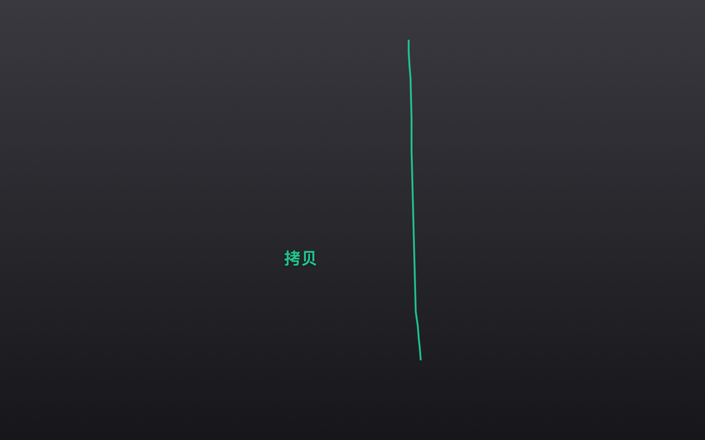
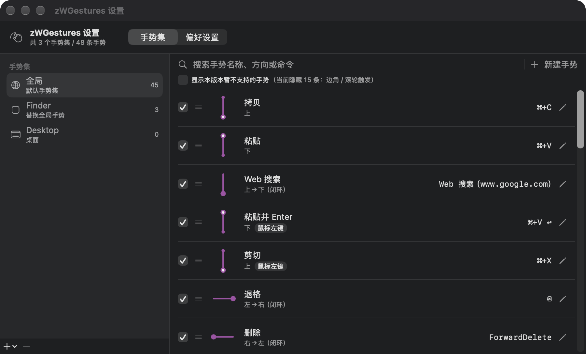
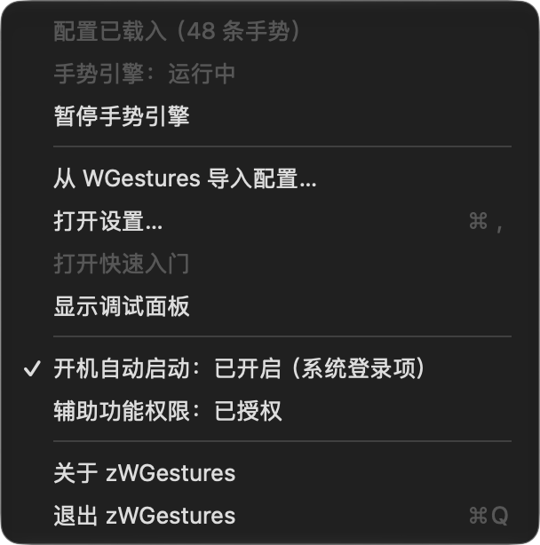

原生的 Apple Silicon 鼠标手势工具 Native mouse gestures for Apple Silicon
按住鼠标右键画一个形状，就执行你为它配置的动作。用 Swift 从头写成，不依赖 Rosetta；兼容 WGestures 2 的配置格式，可以直接导入你已有的手势。 Hold the right mouse button, draw a shape, and the action you configured for it runs. Written from scratch in Swift with no Rosetta dependency, and compatible with the WGestures 2 configuration format so your existing gestures carry over.
下载 macOS 版Download for macOS 校验和与其它版本Checksums & other releases
首次打开需要放行一次。这个应用没有 Apple 开发者签名，macOS 会拦下它 —— 这是预期行为，不是文件损坏。放行步骤见下面的「安装」，一步一步都写清了。 macOS will block the first launch. The app is not signed with an Apple Developer certificate — that is expected behaviour, not a corrupted file. The “Install” section below walks through it.
长这样What it looks like



功能特性Features
- 右键手势，形状随意Right-button gestures of any shape 不只是上下左右 —— 任意折线、圆圈、L 形都能识别，靠形状归一化距离匹配。Not just up/down/left/right — arbitrary polylines, circles and L-shapes, matched by normalised shape distance.
- 一条手势 = 笔画 + 动作A gesture = a stroke + an action 动作可以是按键序列（含组合键与多步序列）、系统功能键、Web 搜索地址或 Shell 脚本，也可以勾选「识别后立即执行」。Key sequences (including modifier combos and multi-step sequences), system function keys, a web-search URL or a shell script — with an optional “run the moment it is recognised”.
- 按应用分手势集，并且有继承Per-application sets, with inheritance 应用自己的手势优先，没定义的继续用全局的 —— 给某个应用只加一条手势，不会让那个应用里的拷贝粘贴失效。An app's own gestures win; anything it does not define falls back to the global set — so adding one gesture for an app never breaks copy/paste inside it.
- 每条手势可以单独禁用Enable or disable any single gesture 保留在列表里、形状和命令都不变，只是画它没反应；整行变淡以示区别。It stays in the list with its shape and command intact, it just does nothing; the row is dimmed.
- 轨迹与手势名实时可视化Live trail and gesture name 识别即变绿，松手后淡出。未识别的手势不会弹出右键菜单。Green on recognition, fading out after release. An unrecognised stroke never drops a context menu.
- 形状冲突会提示，顺序即可调Conflicts flagged, priority by list order 相同形状靠手势修饰键区分是合法的（拷贝与剪切都是向上），不会被误报。真冲突标橙，拖拽或右键菜单即可调整。Two gestures sharing a shape is legal when a gesture modifier tells them apart (Copy and Cut are both “up”), so that is not reported. Real conflicts are marked orange and reordered by drag or context menu.
- 界面里能改一切，保存前自动备份Everything editable, with automatic backups 浏览、搜索、改名、删除、重画形状、改动作、排队、禁用，都不用再手改 JSON。覆盖配置前旧版本会存进 Backups（各留最近 10 份）。Browse, search, rename, delete, redraw a shape, change an action, reorder, disable — no hand-editing JSON. Before a file is overwritten the old version goes into Backups (last 10 kept).
- 兼容 WGestures 配置，一键导入WGestures-compatible, one-click import 首次启动自动导入，也可以随时从菜单栏手动重新导入。原版目录只读，绝不改写。Imported automatically on first launch, and re-importable from the menu bar at any time. The original's data directory is read-only and never modified.
安装Install
-
下载并打开 dmgDownload and open the dmg
从上面的按钮下载
zWGestures-arm64.dmg，双击打开。 DownloadzWGestures-arm64.dmgwith the button above and open it. - 把 zWGestures.app 拖进「应用程序」Drag zWGestures.app into Applications 不要在 dmg 卷里直接双击运行。dmg 卷是只读的、随时会被卸载，而且系统会把卷内运行的应用移置到一个随机只读路径 —— 后果是开机自启注册的是那个临时路径，重启后就失效。 Do not run it from inside the dmg volume. That volume is read-only and gets unmounted, and macOS translocates an app run from it to a random read-only path — so autostart would register that temporary path and stop working after a reboot.
-
首次打开会被系统拦下，去系统设置放行macOS blocks the first launch — allow it in System Settings
双击之后应用好像启动了、随即又退出，这是系统在后台评估后把它结束了。打开系统设置 › 隐私与安全性，往下找到安全性一节，会看到「已阻止“zWGestures”以保护Mac。」，点右边的「仍要打开」，然后回到「应用程序」再双击一次。
（在 Finder 里双击时如果弹的是对话框，那个对话框上的按钮放行不了 —— macOS Sequoia 起苹果已经移除了「按住 Control 点按 → 打开」这条老路。） After the double-click the app appears to start and then quits: the system evaluates it in the background and then terminates it. Open System Settings › Privacy & Security, scroll to the Security section, find “已阻止“zWGestures”以保护Mac。” and click 仍要打开 (Open Anyway), then double-click the app in Applications again.
(If Finder shows a dialog instead, the buttons on that dialog cannot allow it — Apple removed the old Control-click → Open route in macOS Sequoia.) - 授权「辅助功能」Grant Accessibility 系统设置 › 隐私与安全性 › 辅助功能，勾选 zWGestures。没有这个权限，全局手势拦截和合成按键都无法工作。勾选后不需要重启应用，它会自己发现并把引擎拉起来。 System Settings › Privacy & Security › Accessibility, tick zWGestures. Without it neither the global gesture interception nor synthetic key events can work. No relaunch needed — the app notices and starts the engine itself.
-
完成Done
开箱就有 48 条中文手势：画「上」是拷贝、画「下」是粘贴、向左后退、向右前进、
L形关闭窗口、C形切换 App。可以直接用，也可以在设置里随便改。 You get 48 gestures out of the box: “up” copies, “down” pastes, left goes back, right goes forward, anLcloses the window, aCswitches apps. Use them as they are, or change anything in the settings.
更完整的说明（包括命令行放行方式、以及这些结论是怎么实测出来的）见仓库里的 docs/INSTALL.md。 A fuller write-up — including the command-line route and how each of these conclusions was actually measured — is in docs/INSTALL.md (in Chinese).
从 WGestures 迁移Migrating from WGestures
已经装了原版 WGestures 的话，首次启动会自动导入你现有的手势，并在弹窗里报告迁移了哪些内容。你的手势、按应用分组、触发矩阵都会带过来。 If you already have the original WGestures installed, the first launch imports your existing gestures automatically and reports what came across. Your gestures, per-application sets and trigger matrix all carry over.
原版目录只被读取，绝不会被改写。配置写到 zWGestures 自己的目录，并在覆盖前自动备份。菜单栏里随时可以重新导入一次。 The original's directory is only read, never written. The configuration goes to zWGestures' own directory, with an automatic backup before each overwrite. You can re-import from the menu bar at any time.
没装过原版也没关系 —— 那样你拿到的是上面那 48 条内置默认手势。 If you have never installed the original, that is fine too: you get the 48 built-in default gestures described above.
为什么会有 zWGesturesWhy zWGestures exists
WGestures 2 是一款出色的鼠标手势工具。它的「手势＝操作步骤之和」「手势修饰键」「继承与重载」等设计是 zWGestures 的直接灵感来源；zWGestures 也刻意保持了与它配置文件格式的兼容，好让你已有的手势能直接搬过来。 WGestures 2 is an excellent mouse-gesture tool. Its ideas — “a gesture is the sum of its steps”, gesture modifiers, inheritance and overriding — are the direct inspiration for zWGestures, which deliberately keeps configuration-file compatibility so that existing gestures carry over.
原版 macOS 版最后一个版本是 2021 年 12 月的 2.3.3。它是基于 Mono / Xamarin.Mac 的 x86_64 应用，在 Apple 芯片 Mac 上依赖 Rosetta 运行。而 Apple 已宣布：macOS 26.4 起，启动依赖 Rosetta 的应用会收到系统提示；macOS 27 是最后一个支持 Rosetta 的版本，之后 Intel-only 应用在 Apple 芯片 Mac 上将不再能运行（少数老游戏除外）。 The last macOS release of the original is 2.3.3, from December 2021. It is a Mono / Xamarin.Mac x86_64 application, so it depends on Rosetta on Apple Silicon Macs. Apple has announced that starting with macOS 26.4 launching a Rosetta-dependent app produces a system prompt, and that macOS 27 is the last release to support Rosetta — after that, Intel-only apps will no longer run on Apple Silicon Macs (a few older games excepted).
为了让这套用了多年的鼠标手势能继续在新系统上用下去，我用 Swift 从头写了一个原生版本。它是独立的重新实现，不是官方版本，与原项目及作者 yingdev（Ying Yuandong）没有隶属关系，不包含原版的任何二进制、字体、图标或激活码。 To keep a mouse-gesture setup that has been in daily use for years working on current systems, I rewrote it from scratch in Swift. It is an independent reimplementation, not an official version, and has no affiliation with the original project or its author, yingdev (Ying Yuandong). It contains none of the original's binaries, fonts, icons or licence keys.
如果你还在用原版并且觉得它好用，请去 yingdev.com/projects/wgestures2 支持原作者。 If you still use the original and like it, please support its author at yingdev.com/projects/wgestures2.
已知限制Known limitations
- 界面目前仅中文。英文界面排在 v0.2.0 的路线图上。The interface is currently Chinese-only. An English UI is on the roadmap for v0.2.0.
- 仅支持 Apple Silicon。不做 Intel / Universal 支持 —— 这正是 zWGestures 存在的理由之一。Apple Silicon only. No Intel or Universal support — which is rather the point.
- 未做 Developer ID 签名与公证，所以首次打开要手动放行一次。Not Developer ID signed or notarised, so the first launch has to be allowed through manually.
- 触发矩阵编辑、边角与滚轮触发尚未实现（这类手势在列表里默认隐藏）；手势分组与动画回放也还没做。Trigger-matrix editing and edge/scroll-wheel triggers are not implemented yet (those gestures are hidden in the list by default); gesture groups and animated replay are still to come.
常见问题FAQ
没签名，安不安全？It is unsigned — is that safe?
「没有签名」在这里的含义是：作者没有买 Apple 的付费开发者账号（99 美元/年），所以拿不到 Developer ID 证书、也就做不了公证。它不等于「来路不明」—— 全部源码公开在 GitHub 上，你可以自己读、也可以自己从源码构建，命令写在 README 里。 “Unsigned” here means the author has not bought Apple's paid developer programme (US$99/year), so there is no Developer ID certificate and therefore no notarisation. It does not mean the origin is unknown — the entire source is public on GitHub; you can read it, or build it yourself with the commands in the README.
发行包提供 SHA256 校验和，可以对照确认下载完整。 Each release ships SHA256 checksums so you can confirm the download is intact.
会不会改我的原版 WGestures 配置？Will it modify my original WGestures configuration?
不会。zWGestures 只读原版目录，配置写到它自己的 ~/Library/Application Support/zWGestures/，并且每次覆盖前都会备份（各留最近 10 份）。你原来的 WGestures 可以继续照常使用。
No. zWGestures only reads the original's directory; its own configuration lives in ~/Library/Application Support/zWGestures/, and every overwrite is preceded by a backup (last 10 kept). Your original WGestures keeps working as before.
更新之后画手势没反应了？After updating, gestures do nothing?
几乎一定是辅助功能授权失效了。未签名的构建每次编译都会改变系统用来识别它的指纹，所以每更新一版都要重新授权一次。此时应用会主动弹一次说明并给出「打开系统设置」按钮，菜单栏也会写「辅助功能权限：已失效（点击重新授权）」。到 辅助功能 列表里把 zWGestures 取消勾选再勾上即可，不用重启应用。 Almost certainly the Accessibility grant was lost. An unsigned build changes the identity macOS uses to recognise it on every compile, so each update needs the grant re-issued. The app will say so in a dialog with an “Open System Settings” button, and the menu bar reports “辅助功能权限：已失效”. Untick and re-tick zWGestures in the Accessibility list; no relaunch needed.
怎么卸载？How do I uninstall it?
退出应用 → 把 /Applications/zWGestures.app 拖进废纸篓 → 如果开过开机自启，到 系统设置 › 通用 › 登录项 里删掉它 → 到 辅助功能 列表里移除 zWGestures（可能有新旧两条重复条目，都删掉）。想连配置一起清掉，就删 ~/Library/Application Support/zWGestures/。
Quit the app → drag /Applications/zWGestures.app to the Trash → if you enabled autostart, remove it under System Settings › General › Login Items → remove zWGestures from the Accessibility list (you may see two entries, old and new; remove both). To clear the configuration too, delete ~/Library/Application Support/zWGestures/.
为什么只支持 Apple Silicon？Why Apple Silicon only?
工程的构建目标就是 arm64。原版 WGestures 是 x86_64 应用、靠 Rosetta 运行，而 Rosetta 即将退出支持（见上面的「为什么会有 zWGestures」）—— 写一个原生 arm64 版本正是这个项目的出发点。
The project's build target is arm64. The original WGestures is an x86_64 app running under Rosetta, and Rosetta is on its way out (see “Why zWGestures exists” above) — writing a native arm64 version is the whole point of this project.